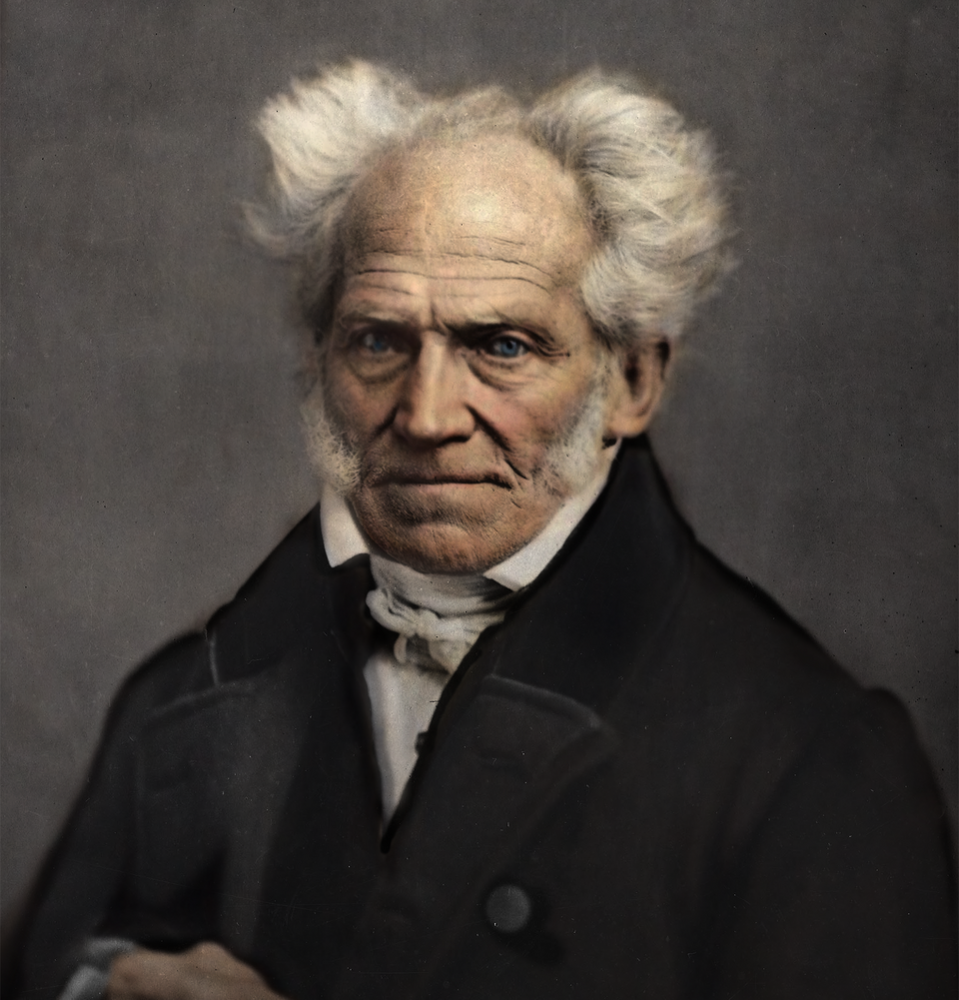
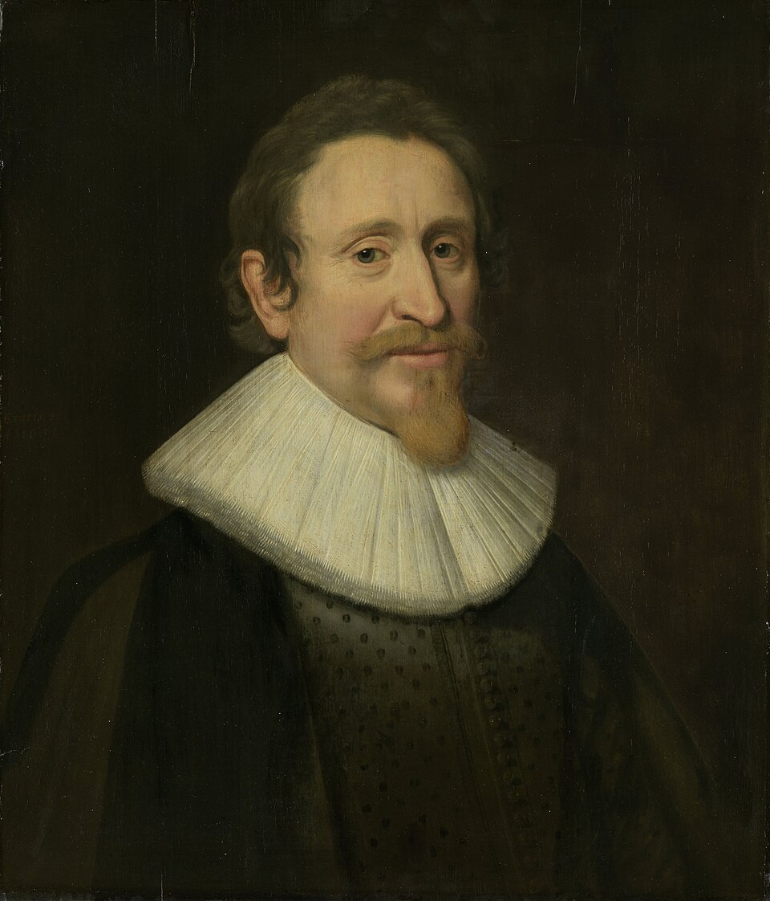
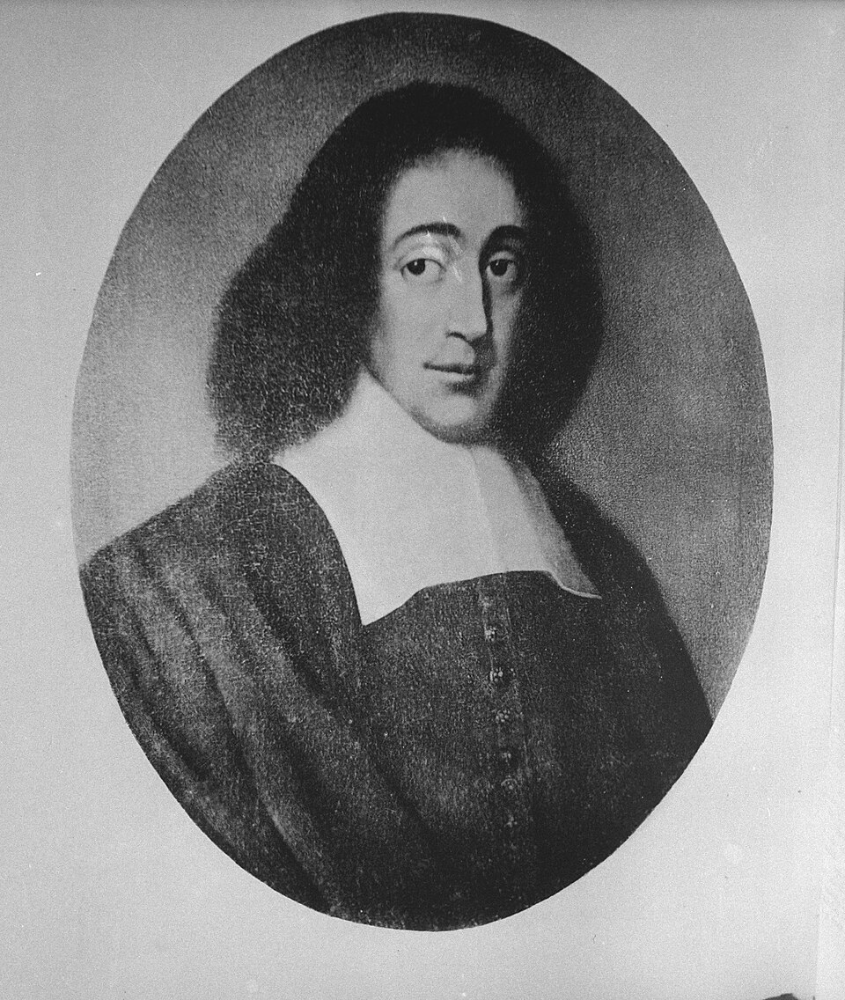

A detailed exploration of the philosophical movements of the
Enlightenment—examining how thinkers placed reason, knowledge,
individual liberty, morality, politics, and human progress at the
center of their search for a better society.
Rationalism
Rationalism asserts that reason and innate ideas, rather than sensory
experience, are the primary and most reliable sources of human
knowledge.
Rationalism is a major epistemological framework that flourished in
Europe during the 17th and 18th centuries, championed by philosophers
like René Descartes, Baruch Spinoza, and Gottfried Wilhelm Leibniz. It
stands in direct contrast to Empiricism. Rationalists argue that the
human mind is not a blank slate at birth; rather, it possesses innate
ideas or principles. Because human senses are frequently deceptive (such
as optical illusions or dreaming), Rationalists believe that absolute
truth can only be discovered through the rigorous use of intellect and
deductive logic.
The paradigm of Rationalist thought is mathematics. Just as mathematical
truths (like 2+2=4 or the angles of a triangle) can be proven entirely
within the mind without needing to physically measure anything,
Rationalists believe that profound metaphysical truths about God, the
self, and the universe can be deduced through pure reason. Descartes'
famous realization, "Cogito, ergo sum" (I think, therefore I am), is the
ultimate rationalist foundation: a truth so logically undeniable that it
requires no physical evidence.
Key Principles
Innate Ideas — the belief that the mind is born with
certain fundamental concepts (like the concept of God, or mathematical
truths) already embedded in it
Deductive Reasoning — the method of deriving
specific, logically certain conclusions from broad, undeniable first
principles
A Priori Knowledge — knowledge that is independent of
all physical experience (e.g., knowing that all bachelors are
unmarried)
Skepticism of the Senses — the view that empirical
observation is flawed, subjective, and incapable of providing absolute
certainty
Major Works
Meditations on First Philosophy — René Descartes
Ethics — Baruch Spinoza
Discourse on Metaphysics — Gottfried Wilhelm Leibniz
Influence
Rationalism was the driving philosophical force behind the Scientific
Revolution and the Enlightenment. By prioritizing human reason over
religious dogma and sensory illusions, it laid the groundwork for modern
mathematics, theoretical physics, and the modern understanding of the
autonomous, reasoning individual.
Common Misconception
A common misconception is that Rationalists entirely rejected the
physical world or refused to look at empirical evidence. In reality,
thinkers like Descartes were pioneering scientists and anatomists. They
simply believed that sensory data is messy and unreliable, and must be
strictly governed and validated by the logical structures of the
rational mind.
Empiricism
Empiricism posits that all human knowledge, concepts, and ideas
originate entirely from sensory experience and observation of the
physical world.
Empiricism is the rival epistemological tradition to Rationalism,
primarily developed by British philosophers John Locke, George Berkeley,
and David Hume during the 17th and 18th centuries. Empiricists
forcefully reject the concept of "innate ideas." John Locke famously
argued that the human mind at birth is a Tabula Rasa—a blank
slate. According to Empiricism, every single thought, imagination, or
concept a human can possibly have is built from raw data gathered by the
physical senses.
Rather than relying on deductive logic to find absolute certainty,
Empiricism relies on inductive reasoning—observing patterns in nature
and drawing probabilistic conclusions. David Hume took this to its
radical conclusion, famously demonstrating that because we can only ever
rely on our senses, we cannot even technically prove "cause and effect."
We only see one event follow another; the "necessity" of it is just a
habit of our psychology. This severe empirical skepticism forced all
later philosophers to reevaluate what humans can actually know.
Key Principles
Tabula Rasa (Blank Slate) — the belief that humans
are born with no pre-existing knowledge or innate concepts
A Posteriori Knowledge — knowledge that can only be
obtained after observing and experiencing the world
Inductive Reasoning — building general theories based
on repeated, specific empirical observations
Skepticism — Hume's conclusion that concepts like
causality, the "self," and objective morality cannot be empirically
proven, only practically assumed
Major Works
An Essay Concerning Human Understanding — John Locke
A Treatise of Human Nature — David Hume
A Treatise Concerning the Principles of Human Knowledge —
George Berkeley
Influence
Empiricism is the philosophical backbone of the modern scientific
method. Its demand for observable, repeatable evidence over theoretical
speculation shaped everything from modern physics to the development of
psychology and sociology as empirical sciences.
Common Misconception
People often assume Empiricists believe our senses are infallible and
perfectly show us reality. Ironically, it is the opposite. Empiricists,
especially Hume, used empirical observation to prove how limited and
flawed human perception is, concluding that while our senses are our
only source of knowledge, they can never provide the absolute,
divine certainty that the Rationalists sought.
Idealism

Idealism argues that reality is fundamentally mental, immaterial, or
socially constructed, rather than purely objective and physical.
Idealism is a vast philosophical movement that reached its peak in 18th
and 19th-century Germany through figures like Immanuel Kant, G.W.F.
Hegel, and Arthur Schopenhauer. Idealism fundamentally argues that
reality as we know it is inexplicably tied to the mind. To resolve the
bitter debate between Rationalists and Empiricists, Kant proposed
"Transcendental Idealism." He argued that while the physical world
exists, our minds actively shape, filter, and construct our experience
of it through built-in categories like time, space, and causality.
Hegel later expanded this into "Absolute Idealism." He rejected Kant's
idea of a hidden physical world we can never truly know. Instead, Hegel
argued that reality itself is a rational, historical process—a universal
"Spirit" (Geist) or collective consciousness that is slowly coming to
know itself through the unfolding of human history, art, religion, and
philosophy. In Idealism, the mind does not just passively observe the
universe; the mind makes the universe meaningful.
Key Principles
Phenomena vs. Noumena (Kant) — the distinction
between the world as it appears to our minds (phenomena) and the world
as it actually is in itself (noumena)
Mind Over Matter — the assertion that physical
objects only have meaning, structure, and reality in relation to a
perceiving consciousness
Dialectics (Hegel) — the process of historical and
intellectual evolution where a thesis clashes with its antithesis,
resulting in a higher synthesis
Absolute Spirit — the Hegelian concept that all of
human history is the progressive realization of universal freedom and
self-awareness
Major Works
Critique of Pure Reason — Immanuel Kant
Phenomenology of Spirit — G.W.F. Hegel
The World as Will and Representation — Arthur Schopenhauer
Influence
German Idealism completely dominated 19th-century European thought.
Kant's philosophy revolutionized epistemology, while Hegel's dialectical
method was famously adopted (and inverted) by Karl Marx to create
Marxism. Idealism also deeply influenced Romantic literature,
psychology, and modern Continental philosophy.
Common Misconception
Idealism is frequently misunderstood as the belief that the physical
world is a literal hallucination, or that if you close your eyes, a
mountain ceases to exist (subjective idealism). For Kant and Hegel, the
physical world is intensely real; their point is simply that "reality"
cannot exist independently of the conceptual frameworks and structures
provided by the conscious mind.
Social Contract Theory
Social Contract Theory posits that individuals consent to surrender
some freedoms to a governing authority in exchange for the protection
of their remaining rights.
Social Contract Theory is a foundational concept in political
philosophy, developed during the Enlightenment by thinkers like Thomas
Hobbes, John Locke, and Jean-Jacques Rousseau. It seeks to answer a
fundamental question: by what right does a government hold power over
individuals? To answer this, philosophers imagined a "State of Nature"—a
hypothetical time before governments or laws existed. In this natural
state, humans have absolute freedom, but their lives are precarious and
vulnerable to violence.
To escape the dangers of the State of Nature, individuals rationally
agree to form a society, mutually signing a metaphorical "social
contract." Hobbes argued that because human nature is vicious, people
surrender their rights to an absolute sovereign (the Leviathan) solely
for security and peace. Locke argued that governments are formed simply
to protect pre-existing natural rights (life, liberty, and property),
and if a government fails this task, the citizens have the right to
overthrow it. Rousseau argued that the contract must serve the "General
Will" of the people, aiming for collective equality rather than just
property protection.
Key Principles
The State of Nature — the theoretical, pre-political
condition of humanity used to deduce human nature and the necessity of
laws
Consent of the Governed — the doctrine that political
authority is only legitimate if it is derived from the rational
agreement of the people, not from divine right
Natural Rights (Locke) — the belief that humans
possess inherent, inalienable rights prior to the existence of any
government
The General Will (Rousseau) — the collective interest
and common good of the citizens, which should be the ultimate
sovereign of any state
Major Works
Leviathan — Thomas Hobbes
Second Treatise of Government — John Locke
The Social Contract — Jean-Jacques Rousseau
Influence
Social Contract Theory single-handedly dismantled the "Divine Right of
Kings." Locke's version directly inspired the American Declaration of
Independence and the US Constitution, while Rousseau's writings became
the philosophical fuel for the French Revolution. It remains the
foundational justification for modern democratic states.
Common Misconception
A very common misunderstanding is that philosophers believed the "Social
Contract" was an actual, historical event where ancient humans gathered
in a field and signed a physical document. In reality, it is a
theoretical "thought experiment" designed to logically prove why
rational people would accept the burden of laws and taxes today.
Materialism
Materialism is the philosophical stance that everything that exists,
including human consciousness, is fundamentally composed of physical
matter.
Materialism (or Physicalism) is an ancient philosophical position
stretching back to Greek atomists like Epicurus, but which found immense
power during the Enlightenment and the Industrial Revolution. It posits
a monistic universe: there is no spiritual realm, no ethereal soul, and
no ghosts in the machine. Everything in existence—including thoughts,
emotions, and consciousness—is the result of the complex interactions of
physical matter in motion according to the laws of physics.
In the 19th century, Karl Marx and Friedrich Engels transformed this
metaphysical theory into an explosive political philosophy called
"Dialectical Materialism." They argued against Hegel's Idealism, stating
that it is not "ideas" or "spirits" that drive human history forward,
but raw, physical economics. According to Marx, the material conditions
of a society (who owns the land, the factories, and the food) completely
dictate its politics, religion, and culture.
Key Principles
Physicalism — the doctrine that only physical matter
and physical properties truly exist; the mental is just a byproduct of
the physical
Determinism — the view that because everything is
physical, every event is causally determined by prior events and the
laws of nature, often challenging the concept of free will
Rejection of Dualism — the outright denial of
Descartes' theory that the mind and the physical body are two
different substances
Historical Materialism (Marx) — the theory that human
society and history are entirely driven by economic forces and class
struggle, rather than abstract ideas
Major Works
De Rerum Natura (On the Nature of Things) — Lucretius
System of Nature — Baron d'Holbach
Das Kapital — Karl Marx
Influence
Philosophical materialism is the operating paradigm of modern natural
sciences, particularly neuroscience and evolutionary biology.
Furthermore, its Marxist political variation reshaped the 20th century,
inspiring socialist and communist revolutions across the globe by
shifting the focus of human suffering from spiritual failings to
physical, economic realities.
Common Misconception
In everyday language, "being materialistic" means being obsessed with
buying clothes, cars, and consumer goods (economic materialism). In
philosophy, Materialism has absolutely nothing to do with consumerism.
It is simply an ontological theory about the nature of reality—that the
universe is made of atoms, not spirits.
Deism
Deism asserts the existence of a creator based on reason and nature,
but completely rejects divine revelation, miracles, and organized
religion.
Deism was the prominent theological philosophy of the Enlightenment
during the 17th and 18th centuries. As the Scientific Revolution began
to reveal the universe as a highly ordered, mathematical machine (thanks
to figures like Isaac Newton), philosophers began to rethink the nature
of God. Deists argued that human reason and the intricate design of the
natural world are sufficient proof that a supreme Creator exists.
However, they entirely rejected the dogmas of traditional Abrahamic
religions.
The core metaphor of Deism is the "Great Watchmaker." Deists believe
that God created the universe, wound it up with perfect physical laws,
and then stepped back. Therefore, God does not intervene in human
affairs. Deists fiercely reject the concepts of miracles, divine
revelation, prophecies, and sacred texts, viewing them as irrational
superstitions or clerical frauds. True religion, to a Deist, is simply
living a moral life and studying the wonders of the natural, scientific
world.
Key Principles
The Watchmaker Analogy — the belief that the
complexity of the universe implies a rational creator who set the
universe in motion but no longer interferes with it
Rational Religion — the doctrine that the only valid
way to know God is through logic, science, and the observation of
nature
Rejection of Miracles — the assertion that God does
not break His own perfect laws of physics to perform miracles
Anti-Clericalism — deep skepticism toward organized
religious institutions, priests, and claims of divine authority
Major Works
The Age of Reason — Thomas Paine
Christianity Not Mysterious — John Toland
The Jefferson Bible — Thomas Jefferson (An edited Bible with
all the supernatural miracles cut out)
Influence
Deism profoundly influenced the founding of the United States. Many of
the American Founding Fathers (including Thomas Jefferson, Benjamin
Franklin, and Thomas Paine) were Deists or heavily influenced by Deism,
which directly led to the drafting of the First Amendment and the strict
separation of church and state, ensuring a secular government.
Common Misconception
Many modern religious critics incorrectly conflate Deism with atheism.
Deists were absolutely not atheists; they firmly believed in a divine
Creator and frequently used logical arguments to defend God's existence.
Their conflict with traditional religion was not over whether God
exists, but over whether God speaks to humans through burning bushes,
angels, or ancient books.
Natural Law Theory

Natural Law Theory argues that human beings possess intrinsic values
and universal moral rules derived from nature, discoverable through
reason.
Natural Law Theory is a foundational legal and ethical philosophy with
roots in Aristotle, formalized by Thomas Aquinas in the Middle Ages, and
secularized by Enlightenment thinkers like Hugo Grotius. It asserts that
the universe has a rational order, and because humans possess reason,
there is a set of objective, universal moral laws inherent in human
nature itself. These natural laws dictate what is fundamentally right or
wrong, regardless of what a particular society, king, or government
dictates.
The philosophy creates a crucial distinction between "Natural Law"
(universal morality) and "Positive Law" (human-made legislation).
According to Natural Law theorists, a human-made law is only valid if it
aligns with the Natural Law. As St. Augustine and later Martin Luther
King Jr. famously stated, "An unjust law is no law at all." This
provided a powerful philosophical justification for civil disobedience,
revolution, and the establishment of universal human rights.
Key Principles
Objective Morality — the belief that moral truths are
not subjective or culturally relative, but are fixed and woven into
the fabric of human nature
Reason as Discoverer — the doctrine that humans do
not need divine revelation to know right from wrong; human logic is
sufficient to discover natural law
Universality — the idea that these inherent laws
apply equally to every single human being on earth, regardless of
their nationality or status
Supremacy over Positive Law — the conviction that
human legislation that violates natural law is fundamentally
illegitimate
Major Works
Summa Theologica — Thomas Aquinas
On the Law of War and Peace — Hugo Grotius
Two Treatises of Government — John Locke (blending Natural
Law with Social Contract)
Influence
Natural Law is the philosophical bedrock of modern international law,
the Geneva Conventions, and the Universal Declaration of Human Rights.
It provided the moral authority for the Nuremberg Trials to prosecute
Nazi officials, as the judges argued that the Nazis violated universal
"laws of humanity" even if their actions were technically legal under
German state law.
Common Misconception
When people hear "Natural Law," they often confuse it with the "laws of
nature" in a Darwinian sense—assuming it means "survival of the fittest"
or acting like wild animals. In philosophy, it means the exact opposite.
Because our "nature" as humans is to be rational and social, Natural Law
dictates that we must act with justice, equity, and compassion, rising
above mere animalistic instincts.
Pantheism

Pantheism is the belief that the universe, nature, and the divine are
entirely identical; God is everything, and everything is God.
Pantheism (from the Greek pan meaning "all" and
theos meaning "God") is a metaphysical and religious philosophy
most famously articulated in the West by the 17th-century rationalist
Baruch Spinoza. It completely rejects the traditional Abrahamic view of
a personal creator who sits outside the universe and judges human
actions. Instead, Pantheism posits absolute monism: there is only one
infinite substance in existence, and that substance is simultaneously
God and the Universe.
Spinoza summarized this with the phrase "Deus sive Natura" (God
or Nature). Because God is infinite, nothing can exist outside of God.
Therefore, every star, rock, animal, and human mind is simply a
temporary mode or expression of this one divine substance. Because the
universe is God, and God acts according to perfect internal necessity,
Pantheists generally believe the universe is strictly deterministic.
Spiritual peace is found not in praying for miracles, but in using
reason to understand the majestic, interconnected necessity of all
things.
Key Principles
Monism — the doctrine that only one substance exists,
eliminating the separation between the Creator and the creation
Immanence — the belief that the divine is entirely
present within the physical world, not transcendent or separate from
it
Rejection of Anthropomorphism — the denial that God
has human emotions, desires, intentions, or a personality
Determinism — the view that everything happens out of
absolute necessity according to the laws of nature/God
Major Works
Ethics — Baruch Spinoza
While not a formalized text, the poetry of Romantic writers like
William Wordsworth deeply expresses pantheistic themes.
Influence
Spinoza's Pantheism horrified religious authorities of his time (leading
to his excommunication), but it profoundly influenced later German
Idealism and the Romantic movement. In the 20th century, Albert Einstein
famously declared, "I believe in Spinoza's God, who reveals himself in
the lawful harmony of the world," bringing Pantheism to the forefront of
modern scientific spirituality.
Common Misconception
Pantheism is frequently confused with Animism or ancient paganism.
Animists believe that spirits live inside specific trees, rivers, or
mountains, making them sacred objects to be worshipped. Pantheism does
not worship a tree; it views the entire, unified, mathematical structure
of the cosmos as the singular divine reality.
Classical Liberalism
Classical Liberalism advocates for civil liberties, individual
autonomy, and free markets under the rule of law, emphasizing a
limited government.
Classical Liberalism is a political and economic philosophy that emerged
in the 18th and 19th centuries during the Enlightenment and the
Industrial Revolution. Developed by thinkers like John Locke, Adam
Smith, and John Stuart Mill, it was a radical reaction against the
immense power of absolute monarchies, religious dogmatism, and
mercantilist economic monopolies. The core tenet of Classical Liberalism
is the supreme moral value of the individual.
Classical liberals argue that the primary purpose of government is
solely to protect individuals from coercion and violence, securing their
rights to life, liberty, and private property. Philosophically, it
champions "negative liberty" (freedom from outside interference).
Economically, it promotes laissez-faire capitalism, arguing
that when individuals are left alone to pursue their own rational
self-interest in a free market, it organically generates wealth and
innovation for the entire society (Adam Smith's "Invisible Hand").
Key Principles
Individualism — the belief that the individual, not
the collective or the state, is the fundamental unit of moral and
political value
Negative Liberty — freedom defined as the absence of
external constraints, interference, or coercion by the government
Laissez-Faire Capitalism — an economic system based
on private ownership, free trade, and minimal state regulation or
taxation
Rule of Law — the principle that all people and
institutions, including the government itself, are subject to and
accountable to laws that are fairly applied
Major Works
The Wealth of Nations — Adam Smith
On Liberty — John Stuart Mill
Two Treatises of Government — John Locke
Influence
Classical Liberalism is the founding architecture of the modern Western
world. It dismantled feudalism and absolute monarchy, gave rise to
modern democratic republics, established the global capitalist economy,
and provided the intellectual framework for freedom of speech, freedom
of religion, and human rights.
Common Misconception
In modern American politics, the word "liberal" is usually associated
with the political Left, implying support for strong government social
programs and economic regulation. Classical Liberalism is
actually the opposite of this; today, its principles align much more
closely with modern Libertarianism and classical conservative economics,
fiercely advocating for a small, non-intrusive government.
Deontology
Deontology is an ethical theory that judges the morality of an action
based on absolute rules and duties, rather than the consequences of
the action.
Deontology (from the Greek deon, meaning "duty") is a moral
philosophy most famously developed by the 18th-century German
philosopher Immanuel Kant. It stands in direct opposition to
Utilitarianism, which argues that an action is good if it produces the
greatest happiness for the greatest number. Deontology argues that
consequences are entirely irrelevant to morality. An action is morally
right only if it is done purely out of a sense of duty to a universal
moral law.
Kant formulated the supreme rule of Deontology as the "Categorical
Imperative." The primary formulation is: you must only act according to
a rule that you could rationally wish to become a universal law for
everyone. For example, lying is morally wrong because if
everyone lied, the concept of truth would collapse. Therefore,
lying is an absolute wrong, even if telling a lie would save someone's
life. Kant's secondary formulation demands that human beings must never
be treated merely as a "means to an end," but always as an "end in
themselves," possessing inherent dignity.
Key Principles
The Categorical Imperative — Kant's absolute,
unconditional moral law that dictates how one must act under all
circumstances
Duty Over Consequences — the belief that the moral
worth of an action lies in the intention and adherence to duty,
regardless of whether the outcome is disastrous
Universalizability — the test for determining a moral
rule: an action is only permissible if it is logically consistent for
everyone in the world to do it
Human Dignity — the moral requirement to respect the
autonomy of every rational being, never using people merely as tools
to achieve a goal
Major Works
Groundwork of the Metaphysic of Morals — Immanuel Kant
Critique of Practical Reason — Immanuel Kant
Influence
Deontological ethics is a massive pillar of modern medical, legal, and
professional ethics. The concept that every human being has intrinsic
dignity and cannot be sacrificed for the "greater good" is the
foundational logic behind universal human rights and laws preventing
cruel and unusual punishment.
Common Misconception
People often assume that deontologists are cold, heartless
rule-followers who do not care about human suffering or happiness. Kant
actually cared deeply about human happiness, but he argued that
happiness cannot be the basis of morality, because people find
happiness in different, sometimes terrible things. Morality must be
based on objective duty to protect human dignity, even when it is
difficult.
Explore Modern Philosophy
The questions raised during the Enlightenment continued to develop in
new directions, giving rise to philosophical movements concerned with
freedom, existence, meaning, knowledge, society, and the changing human
condition.


Social Contract Theory
Social Contract Theory is a foundational concept in political philosophy, developed during the Enlightenment by thinkers like Thomas Hobbes, John Locke, and Jean-Jacques Rousseau. It seeks to answer a fundamental question: by what right does a government hold power over individuals? To answer this, philosophers imagined a "State of Nature"—a hypothetical time before governments or laws existed. In this natural state, humans have absolute freedom, but their lives are precarious and vulnerable to violence.
To escape the dangers of the State of Nature, individuals rationally agree to form a society, mutually signing a metaphorical "social contract." Hobbes argued that because human nature is vicious, people surrender their rights to an absolute sovereign (the Leviathan) solely for security and peace. Locke argued that governments are formed simply to protect pre-existing natural rights (life, liberty, and property), and if a government fails this task, the citizens have the right to overthrow it. Rousseau argued that the contract must serve the "General Will" of the people, aiming for collective equality rather than just property protection.
Key Principles
Major Works
Influence
Social Contract Theory single-handedly dismantled the "Divine Right of Kings." Locke's version directly inspired the American Declaration of Independence and the US Constitution, while Rousseau's writings became the philosophical fuel for the French Revolution. It remains the foundational justification for modern democratic states.
Common Misconception
A very common misunderstanding is that philosophers believed the "Social Contract" was an actual, historical event where ancient humans gathered in a field and signed a physical document. In reality, it is a theoretical "thought experiment" designed to logically prove why rational people would accept the burden of laws and taxes today.